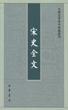

| 史书 > |
| 宋史全文 |
| 无名氏 编著 |
|
宋史全文，内府藏本，36卷，编年体断代史。成书于宋末元初，不著撰人名氏，原题《续通鉴长编》，每卷标题皆有“宋史全文”四字。“全文”当是相对李焘记载北宋历史的《续资治通鉴长编》而言。本书记载宋太祖建隆元年(960)到南宋理宗景定五年(1264)，304年的史事。原目录还有度宗（咸淳元年至咸淳十年）少帝（德祐元年至德祐二年），附益王、广王，但实际没有正文。 是书于诸家议论采录颇富，虽其立说不尽精醇，而原书世多失传，足以资参考。尤其是其比较完整地保留了《续资治通鉴长编》所缺30年史事，提供了《中兴圣政》今残的第30至45卷的相关史事，尤足珍贵。 （2020-11-26整理） |
 |